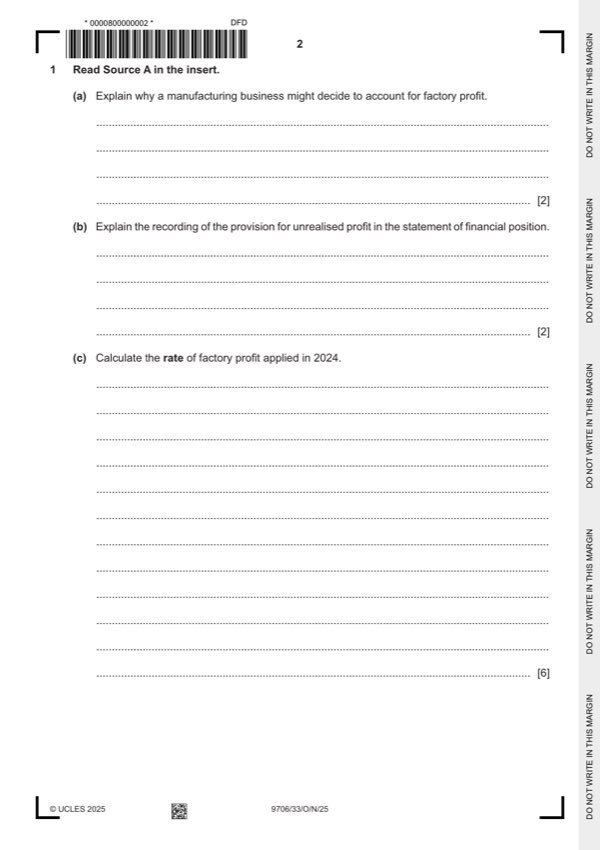

Question 1

Original paper page 2
Part 1(a) — solution
Explain why a manufacturing business might decide to account for factory profit. 2
To assess how successful its manufacturing operations have been (1) by comparing the production cost with the buy-in
cost (1).
Accept other valid responses.
Mark points
- Include the ideas shown in the solution above.
Part 1(b) — solution
Explain the recording of the provision for unrealised profit in the statement of financial position. 2
The closing balance on the account is deducted from inventory of finished goods (1) in the current asset section (1) to bring
the value back to cost (1) which avoids profit being recognised before it is earned (1).
Accept other valid responses.
Max 2
Mark points
- Include the ideas shown in the solution above.
Part 1(c) — solution
- W1 2 300 + 1 200 + 57 900 – 2 000 = 59 400
- W2 13 200 + 18 400 + 6 000 = 37 600
- W3 (144 000 – 120 000)/120 000 100% = 20%
Mark points
- W1 2 300 + 1 200 + 57 900 – 2 000 = 59 400
- W2 13 200 + 18 400 + 6 000 = 37 600
- W3 (144 000 – 120 000)/120 000 100% = 20%
Part 1(d) — solution
- W1 120 000 20% = 24 000
- W2 30 180 + 12 000 = 42 180
- W3 21 830 + 4 400 = 26 230
- W4 opening balance = 4 140 15/115 = 540 (1)
- closing balance = 5 760 20/120 = 960 (1)OF
- increase in provision (expense) = 420 (1)OF
Mark points
- W1 120 000 20% = 24 000
- W2 30 180 + 12 000 = 42 180
- W3 21 830 + 4 400 = 26 230
- W4 opening balance = 4 140 15/115 = 540 (1)
- closing balance = 5 760 20/120 = 960 (1)OF
- increase in provision (expense) = 420 (1)OF
Part 1(e) — solution
Discuss the factors Faizan should consider before responding to the new customer. Support your answer by 7
considering two ways in which he could fulfil the order.
General comments (Max 3)
Faizan should set the selling price such that the order would be profitable. (1) It may increase his profile in the industry. (1)
The customer may become a regular customer. (1) The rate of profit on this order may be higher or lower than the rate of
factory profit. (1)
Max 4 for any two of the following:
Increasing production capacity
Additional factory space (1) and the employment of more staff (1) should be considered. There will be no need for these
resources if this is a one-off order. (1)
Buying in instead of manufacturing
Faizan must consider the quality / timely delivery of goods if outsourcing. (1) The new customer may be able to buy the
goods straight from the supplier. (1) The buy in price should be compared to the manufacturing cost. (1) The contribution
per unit may change. (1)
Reducing sales to regular customers
This may cause a loss of goodwill / bad publicity. (1) The selling price for the bulk order may be lower than the usual selling
price hence reducing profit per unit. (1) The customers may not come back once the special order is finished. (1) The bulk
order may give rise to a saving in administrative costs compared to multiple small orders. (1)
Accept other valid responses
University Press & Assessment 2025 Page 11 of 18
9706/33 Cambridge International AS & A Level – Mark Scheme October/November 2025
Mark points
- Include the ideas shown in the solution above.